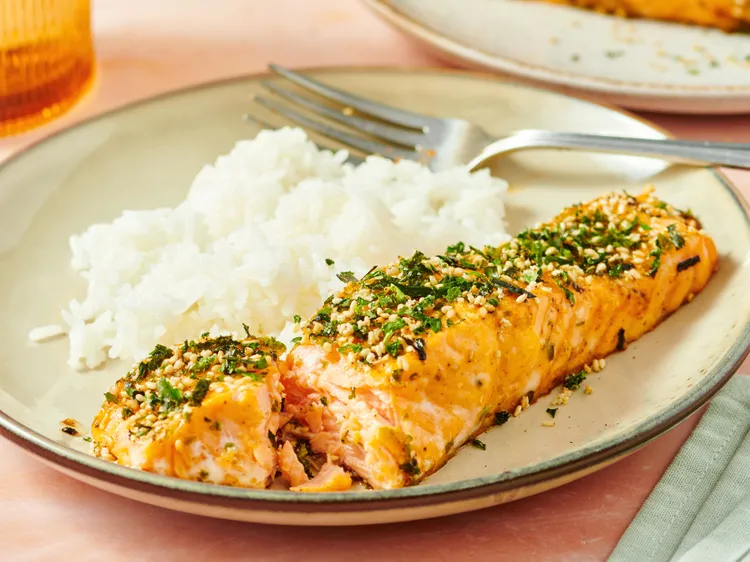

Furikake-salmon

height ="300" _ width ="250"
Description
In this 4-ingredient furikake salmon, silky kewpie mayonnaise, spicy Sriracha, and crunchy furikake seasoning complement rich salmon. Serve this alongside a macaroni salad or jasmine rice.
ingredients
- 1 pound salmon fillets
- salt and freshly ground black pepper to taste
- 2 tablespoons Kewpie mayonnaise
- 2 teaspoons Sriracha, or to taste
- 2 tablespoons furikake seasoning
Steps
- Gather all ingredients. Preheat the oven to 375 degrees F (190 degrees C).
- Pat salmon filets dry; sprinkle with salt and pepper. Stir kewpie mayonnaise and sriracha together in a small bowl; brush liberally over salmon. Sprinkle furikake over the salmon.
- Bake in the preheated oven until fish flakes easily with a fork, about 20 minutes.
- Serve immediately.